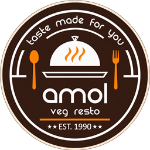

Amol Veg Restro
100% PURE VEGETARIAN
Old Pune Naka, Solapur
|
11:00 AM – 11:00 PM
|
Air-Conditioned Dining
|
Pure Vegetarian & Jain Options
×
Categories
279
dishes
Sort by:
Default Order
Price: Low to High
Price: High to Low
Popular First
Name (A–Z)
×
Your browser does not support HTML5 video.
1 / 4
📸 Photo
🌱
Prepared in 100% pure vegetarian kitchen. Please inform our captain for Jain preparation.
Browse Categories
×